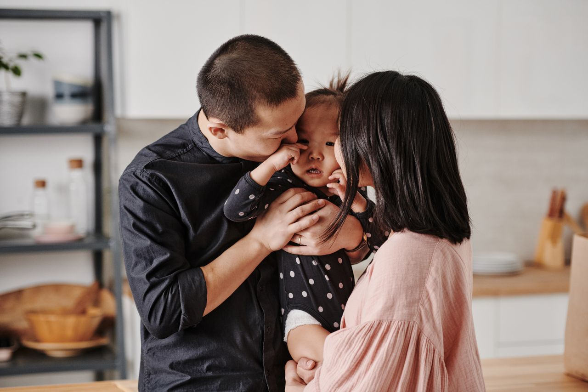
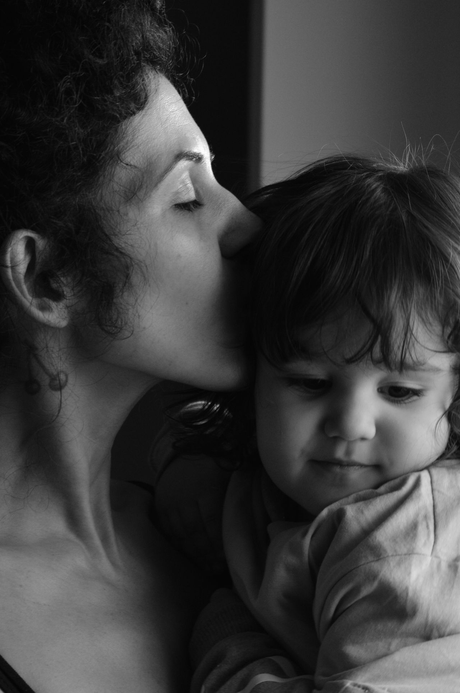
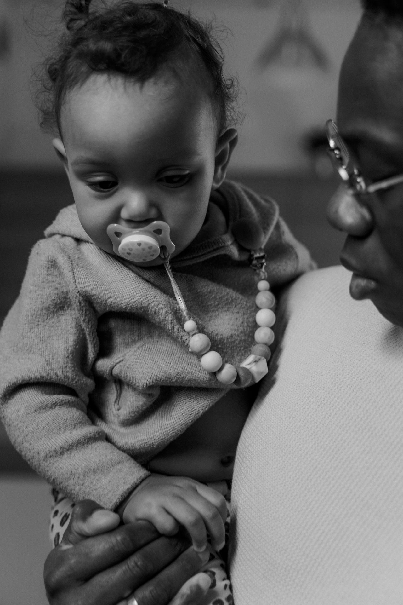
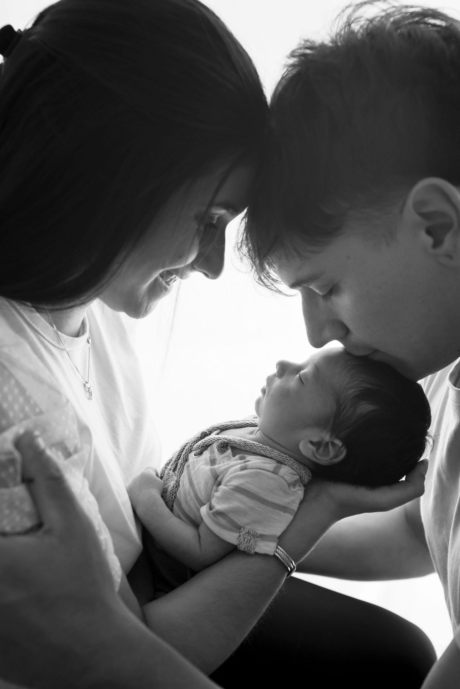
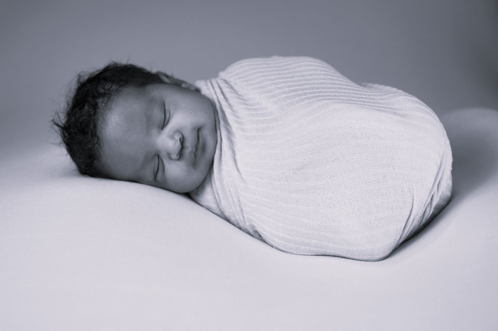

NATURAL FAMILY PHOTOGRAPHY
Capturing honest connection and fleeting moments with your loved ones
Stories Of Your Pure Connection
Natural Family Photography Sessions
There is something deeply authentic about photographing your family in a completely natural environment where everyone can express their true selves. A perfect location isn't just a backdrop; it is a living chest of memories. My family sessions are designed to document your family’s real rhythm—the quiet warm hugs, the kids running around in fields, and the raw, unscripted expressions of love that happen when you simply forget the camera is there.
You don't need to stress about rigid styling, forced smiles, or keeping everyone on a perfectly strict timeline. By bringing a relaxed dynamic into the environment, your family stays completely comfortable. We let the children lead the way. If they need to rest, play, or just be held closely, we pause. This approach creates a stress-free experience that captures the genuine atmosphere of these golden moments.
No elaborate studio lighting or heavy poses are required. Instead, we use the beautiful natural light to document your family just as they are. These photographs will serve as an honest visual legacy—reminding you not only of how fast the kids grew, but exactly what it felt like to be wrapped up in each other's arms.


In the right light, at the right moment, everything is extraordinary.
- Aaron Rose






STORIES MADE TO BE FELT
Decades from now, you won't just look at these photographs — you will feel them. Let's capture the wild magic of this exact season before it gently slips into a beautiful memory.
